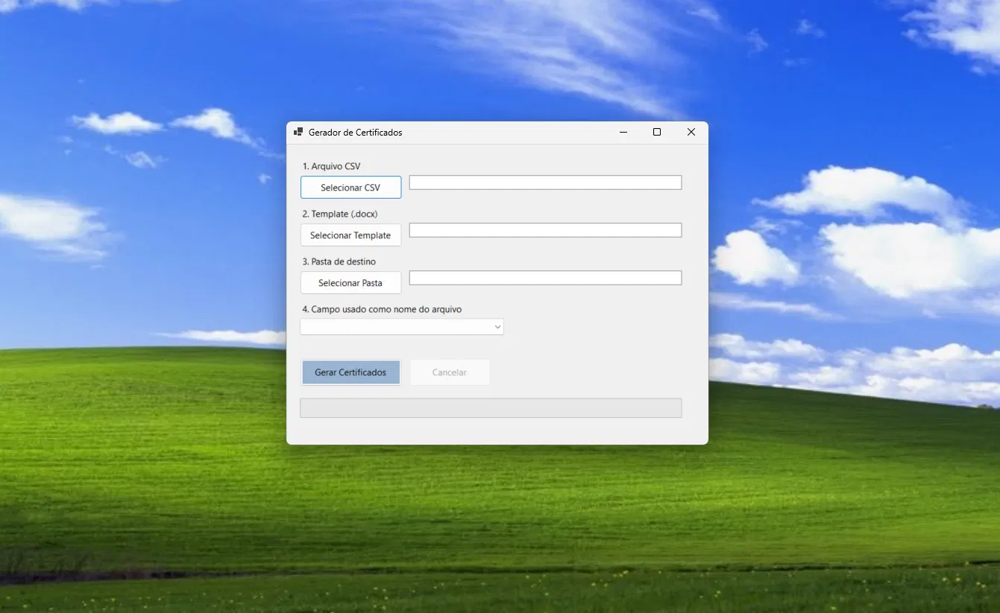
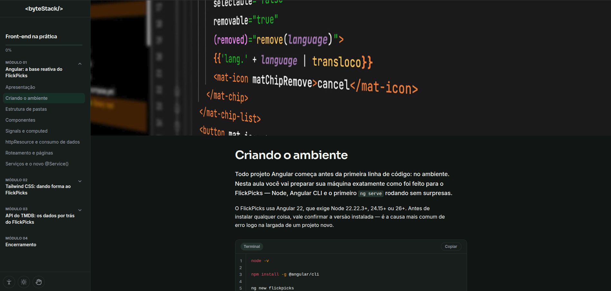
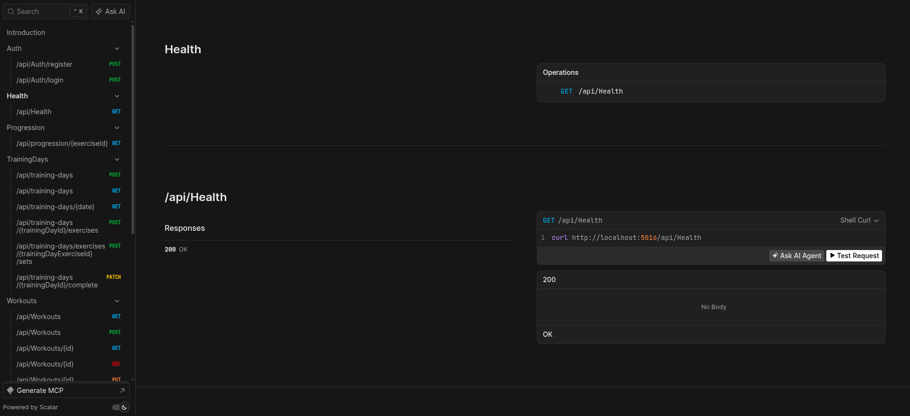
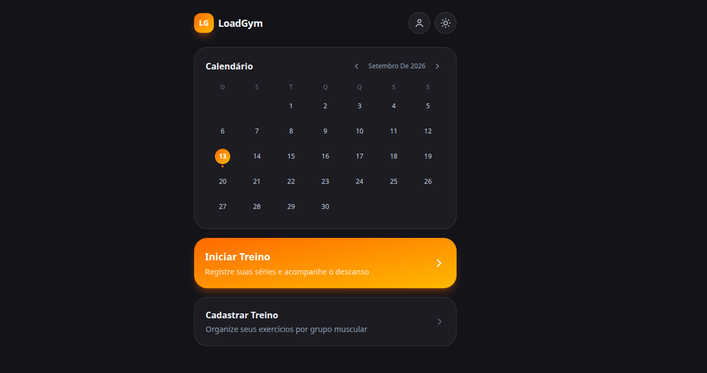

Uso pessoal

FlickPicks
FlickPicks é um app de descoberta de filmes/séries feito com Angular 22 (standalone components, signals, change detection zoneless) e Tailwind CSS 4, consumindo a API da TMDB direto pelo cliente.
Front-end · Angular · e-learning · .NET
Desenvolvo interfaces pra e-learning no Senai-SP do storyboard em SCORM ao componente na tela. — focado em aprender Angular, React e .NET.
Minha trajetória profissional começou no e-commerce, onde desenvolvi experiência em operações, gestão e vendas online. Com o tempo, migrei para a área de tecnologia, aprofundando meus conhecimentos em desenvolvimento web, especialmente com Angular e .NET.
Hoje, trabalho no SENAI-SP com desenvolvimento e produção de materiais educacionais, atuando entre front-end, conteúdo digital e diagramação. No dia a dia, uno conhecimentos técnicos e visuais para transformar conteúdos em experiências digitais mais claras e funcionais.
Uma seleção do que ando construindo — de reescritas de projetos reais a experimentos pessoais.
FlickPicks é um app de descoberta de filmes/séries feito com Angular 22 (standalone components, signals, change detection zoneless) e Tailwind CSS 4, consumindo a API da TMDB direto pelo cliente.

Aplicação desktop em .NET / C# (Windows Forms) que gera certificados em lote a partir de um template do Word e uma planilha CSV, convertendo cada documento automaticamente para PDF.

Controle de estoque para pequenos negócios — cadastro de produtos com variações (tamanho/cor), marcas e categorias próprias, e alertas de estoque baixo. Angular 22 + Firebase.

Template Angular reutilizável para cursos autoinstrucionais — objetos de aprendizagem prontos (código, exercícios, gráficos, tabelas) e progresso salvo no navegador.

API REST em .NET para acompanhamento de treino de academia — autenticação JWT, controle de treinos/exercícios e agregação de progressão de carga por semana.

App Angular para acompanhamento de treino de academia — calendário de treinos, sessão com séries e cronômetro de descanso, e gráfico de progressão de carga.